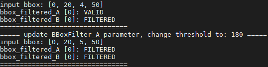

运行时进行参数更新¶
除了在运行前通过配置文件设置Method参数。在运行时，您可以调用XStream Framework的UpdateConfig()接口对Method的参数进行更新。
/**
* @brief 更新Method参数
* @param unique_name Workflow配置文件中，Method所对应Node的unique_name
* @param ptr 传递的参数信息
* @return: 0：成功，非0：失败
*/
virtual int UpdateConfig(const std::string &unique_name, InputParamPtr ptr) = 0;
InputParamPtr类定义如下。is_json_format_表示是否通过json字符串传递参数。is_enable_this_method_表示是否使能该Method。unqiue_name_为Node的unique_name。
/// param of inputdata
class InputParam {
public:
explicit InputParam(const std::string &unique_name) {
unique_name_ = unique_name;
is_json_format_ = false;
is_enable_this_method_ = true;
}
virtual ~InputParam() = default;
virtual std::string Format() = 0;
public:
bool is_json_format_;
bool is_enable_this_method_;
std::string unique_name_;
};
typedef std::shared_ptr<InputParam> InputParamPtr;
您可以通过json字符串或类的成员变量携带待更新参数。
当使用json字符串时，需要设置is_json_format_为true。同时，需要实现Format()函数，返回json字符串。在Method的UpdateParamter()函数中，您需要从json字符串中解析出需要的字段。之后对参数进行更新。
当使用类的成员变量时，需要设置is_json_format_为false。此时，您需要实现相应的Get()函数，获取待更新参数。
相关示例代码在method/filter_param.h和method/bbox_filter.cc中。
假设您使用如下Workflow。
{
"inputs": [
"in_bbox"
],
"outputs": [
"bbox_filtered_A",
"bbox_filtered_B"
],
"workflow": [
{
"method_type": "BBoxFilter",
"unique_name": "BBoxFilter_A",
"inputs": [
"in_bbox"
],
"outputs": [
"bbox_filtered_A"
],
"method_config_file": "a_filter.json"
},
{
"method_type": "BBoxFilter",
"unique_name": "BBoxFilter_B",
"inputs": [
"in_bbox"
],
"outputs": [
"bbox_filtered_B"
],
"method_config_file": "b_filter.json"
}
]
}
您可以通过如下代码更新BBoxFilterMethod中使用的阈值。
...
std::string unique_name("BBoxFilter_A");
// 创建FilterParam，指定要更新BBoxFilter_A中Method的参数
auto ptr = std::make_shared<xstream::FilterParam>(unique_name);
// 设置阈值为90
ptr->SetThreshold(10.0);
// 调用UpdateConfig接口，传入Node的unique_name和待更新的参数
flow->UpdateConfig(ptr->unique_name_, ptr);
...
本示例编译后将在build/bin下生成stage3_update_parameter_example可执行文件。您可以将stage3/config目录下的配置文件复制到build/bin目录下，之后执行：
./stage3_update_parameter_example ./filter_workflow.json
程序运行后，将打印：
BBoxFilter Method的起始阈值
输入BBox信息
输出BBox的状态（如是否被过滤）
更新参数信息
